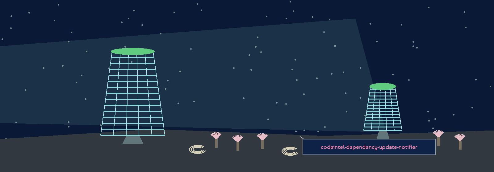

codeintel-dependency-update-notifier
The Pigeon Loft. A command line tool that reports which installed packages have a newer version waiting on the public index, learning the news one package at a time.


Installed setRead from pip list in JSON form, with the project path handed to pip when one is given
Latest versionLearned by deliberately failing a pip install and taking the last entry of the version list in pip's own error message
SummaryEvery run prints probed, updated, and unknown counts; the up to date line prints only when every package was probed and none waits
ExitAny package ending unknown ends the run at exit 1
Usage
python3 main.py [-r REQUIREMENTS_FILE] [-p PROJECT_PATH] [-v] [--check-security]
A requirements file narrows the check to its names only: specifiers, extras, and markers are dropped before matching, and an unreadable file ends the run at exit 1 with no fallback to checking everything. That names-only behaviour is a fact of the code the README parameter list does not state. Under --check-security, safety's own exit 1 means findings and counts as a finished check; only a missing safety tool or another return code fails that half.
| Option | What it does |
|---|---|
-r | Narrow the check to the names in this requirements file. |
-p | The project directory handed to pip list. Default the current directory. |
-v | Verbose logging. |
--check-security | Add a run of the safety tool with its full report. |
What the report rests on
- The latest version is trusted to pip's ordering: the run takes the final entry of the failed install's version list as latest, and never checks that ordering itself.
- A package that cannot be probed is not quietly passed over; it ends the whole run at exit 1.
- The usage line in the README is a placeholder naming an executable the repo does not ship; the real invocation is the one above.
Requirements
Python with packaging 23.0 or later, pip itself, and the safety tool when --check-security is used.